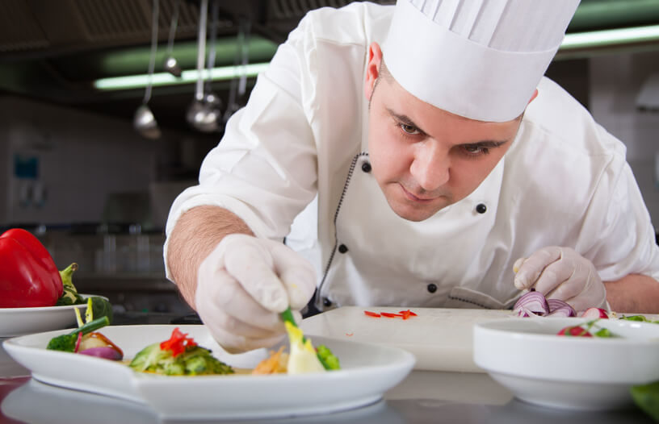

Nos Chefs
 Alain Ducasse, né le 13 septembre 1956 à Orthez (Basses-Pyrénées, France), est un chef cuisinier français naturalisé monégasque.
Alain Ducasse a eu trois étoiles au Guide Michelin avec trois établissements : Le Louis XV à l’hôtel de Paris Monte-Carlo (en 1990), le Alain Ducasse au Plaza Athénée à Paris (en 1997) et le Alain Ducasse at The Dorchester à Londres (en 2010).
Alain Ducasse, né le 13 septembre 1956 à Orthez (Basses-Pyrénées, France), est un chef cuisinier français naturalisé monégasque.
Alain Ducasse a eu trois étoiles au Guide Michelin avec trois établissements : Le Louis XV à l’hôtel de Paris Monte-Carlo (en 1990), le Alain Ducasse au Plaza Athénée à Paris (en 1997) et le Alain Ducasse at The Dorchester à Londres (en 2010).
Julie est une cheffe cuisinière et maître restauratrice. Seule femme française cheffe à détenir trois étoiles. Elle totalise, pour ses restaurants, 8 étoiles Michelin, ce qui en fait la femme cheffe la plus étoilée au monde

John, née Lecocq1 le 6 décembre 1981 à Enghien-les-Bains (Val-d'Oise) est une chef cuisinière N 1 français doublement étoilé.
Il est vainqueur de la saison 2 de Top Chef sur M6 en 2011. Il est un des rares hommes à avoir obtenu deux étoiles au guide Michelin2,.
 Roman Alain Passard, né le 4 août 1956 à La Guerche-de-Bretagne (Ille-et-Vilaine), est un chef cuisinier français. Il commence sa carrière à l'âge de 14 ans, à l'Hôtellerie du Lion d'or à Liffré sous la direction de Michel Kerever. C'est là qu'à 26 ans, il devient le plus jeune chef récompensé par deux étoiles.
Roman Alain Passard, né le 4 août 1956 à La Guerche-de-Bretagne (Ille-et-Vilaine), est un chef cuisinier français. Il commence sa carrière à l'âge de 14 ans, à l'Hôtellerie du Lion d'or à Liffré sous la direction de Michel Kerever. C'est là qu'à 26 ans, il devient le plus jeune chef récompensé par deux étoiles.